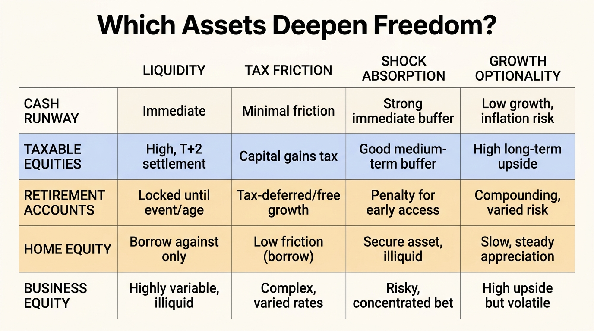

The Wealth Plateau Effect
Many households do not fail to build wealth because they stop earning. They stall because each additional dollar arrives in a slower form than the one before it. Early wealth often grows through rising income, obvious saving gaps, and first-order compounding. Later wealth often becomes trapped in home equity, retirement wrappers, tax friction, family overhead, and fixed obligations that expand just as optional capital should have accelerated.
This is the wealth plateau effect. It does not mean balances literally stop moving. It means the practical quality of wealth stops improving at the same rate. Net worth may still rise. Optionality, liquidity, and deployable compounding often do not. The household starts carrying larger nominal assets without achieving the corresponding jump in strategic freedom.
Core thesis: wealth plateaus when income growth no longer converts cleanly into optional capital. That usually happens because contribution rates stop scaling, assets shift toward illiquid or tax-deferred forms, and household obligations absorb the marginal surplus that should have deepened resilience. The plateau is therefore a balance-sheet-composition problem, not just a motivation problem.

Why Net Worth And Wealth Quality Diverge
The easiest years of wealth building are often the years when the base is small but the marginal improvement is visible. Paying off high-interest debt, establishing cash reserves, raising savings from near zero, and getting first exposure to equity markets create sharp changes in resilience. Later on, the household can add substantial nominal assets while seeing much less change in usable freedom.
The Survey of Consumer Finances helps explain why. As families age and move up the distribution, wealth composition shifts heavily toward housing, retirement accounts, business equity, and other assets that can be valuable without being immediately deployable. That is not a defect in itself. It becomes a trap when households confuse gross value with optional capital.
WealthMeter readers should separate three layers: headline net worth, investment capital that can still be reallocated without major penalty, and real liquidity that can absorb shock or fund a strategic pivot. The plateau usually appears in the gap between the first number and the latter two.
Contribution Rates Usually Flatten Before People Admit It
A second plateau mechanism is behavioral and structural at the same time. Early in a career, raises can meaningfully increase savings rates because core obligations are still narrow. Later raises are often absorbed by mortgage size, school costs, caregiving, insurance, taxes, and the quiet operating budget of a more complex household. Income rises. Free cash margin does not keep pace.
This is not mere lifestyle-inflation rhetoric. Lifecycle finance research has long shown that saving paths are shaped by family structure, retirement systems, and housing choice, not only by discipline. A household can be objectively high earning while adding surprisingly little new taxable, flexible capital because the marginal dollar is pre-committed before it arrives.
That is why many households feel richer without becoming much more secure. They are climbing in asset value while running in place on optionality.
Illiquidity Starts Masquerading As Progress
Plateaus become especially deceptive when balance-sheet growth comes from hard-to-use wealth. Home equity is the classic example. It can be real, substantial, and psychologically satisfying while offering little near-term flexibility unless the owner sells, borrows, or downsizes. Tax-deferred retirement wealth can create the same effect. It improves long-horizon security but may not help the next 24 months of decision-making at all.
This is one reason middle and upper-middle balance sheets often look stronger than they function. Wolff's work on household wealth repeatedly shows the centrality of housing and retirement assets in broad household wealth. Those assets matter. They also make the plateau harder to diagnose because the dashboard total keeps rising while the household's ability to change course remains constrained.
The problem is not illiquidity alone. It is illiquidity combined with ongoing obligations. A family whose wealth is increasingly locked while its spending floor is rising can look prosperous and still be strategically brittle.
Returns Also Change Once Asset Mix Changes
The plateau effect is not only about saving less. It is also about owning slower compounding mixes. Early capital in low-cost public equities or business creation can grow at one pace. Later capital may move into lower-return cash buffers, principal-heavy housing exposure, or retirement allocations that become more conservative as the household ages. That can be rational. It can also reduce the rate at which wealth deepens.
This is where many compounding narratives become misleading. They assume the next decade compounds on the same terms as the last decade. Real households change their asset mix, tax profile, labor flexibility, and risk tolerance. The plateau is often the moment when the compounding engine becomes larger but less efficient.
In practice, this means wealth growth can continue while the capacity to create future growth weakens. That is a different kind of stall, but it is still a stall.

Why Retirement Security Can Coincide With A Midlife Plateau
There is a narrow but important distinction between retirement security and active wealth mobility. As households move deeper into retirement-account accumulation and Social Security expectations, future security can improve even while current optional capital stops accelerating. Sabelhaus and Volz show why broad household wealth analysis changes once annuitized and retirement-linked wealth are considered. Some security is real but inaccessible on present-decision timescales.
That is one reason plateau conversations can become confused. One observer sees a family with a strong retirement trajectory and calls it wealthy. Another sees weak flexibility, low taxable capital, and high fixed costs and calls it stuck. Both can be right because they are measuring different time horizons.
The WealthMeter view should keep those horizons separate. A family can be retirement-safe and still present-tense fragile. The plateau effect describes that mismatch.
What Breaks The Plateau
- Measure optional capital separately from gross net worth. Taxable deployable assets, real cash runway, and low-friction borrowing capacity deserve their own score.
- Track the marginal savings rate, not only total savings. The plateau usually shows up when raises stop lifting flexible capital.
- Audit asset mix by mobility value. A dollar in home equity, a 401(k), and a taxable brokerage account are not interchangeable for decision-making.
- Treat fixed-cost growth as a wealth drag. Tuition, property tax, insurance, and debt service can erase the freedom that nominal asset gains appear to create.
- Rebuild a compounding sleeve that stays flexible. Without one, the balance sheet gets larger but harder to use.
These are not anti-housing or anti-retirement arguments. They are anti-confusion arguments. A household needs both long-horizon security and short-horizon freedom. The plateau begins when one is quietly replacing the other.
Known, Inferred, And Unknown
| Category | Assessment |
|---|---|
| Known | Household wealth composition shifts strongly with age toward housing, retirement assets, and other forms that are valuable but less flexible than taxable liquid capital. |
| Known | Lifecycle saving, taxes, and family obligations materially shape how much of each additional income dollar becomes new wealth rather than new fixed cost. |
| Known | Retirement-linked and annuitized wealth can improve future security without improving present optionality or current shock capacity. |
| Inferred | Many apparent midlife and upper-middle wealth stalls are really composition stalls in which nominal wealth rises while deployable capital, flexibility, and compounding efficiency flatten. |
| Unknown | Which household-control systems most reliably prevent the plateau without forcing excessive leverage, tax drag, or underinvestment in long-horizon security. |
The Practical Reading For WealthMeter
The wealth plateau effect belongs in the structural-trap category because it hides inside respectable-looking balance sheets. A family can have rising home equity, solid retirement balances, and strong gross income while still failing the optionality test. If the next five years cannot be financed without borrowing against locked assets or tolerating large tax friction, the household is plateauing in the only sense that matters strategically.
The right response is not to chase exotic returns. It is to restore conversion quality between income and usable capital. Once that conversion is repaired, compounding can matter again. Without it, net worth becomes an impressive but less decision-grade number.
Further Reading Inside The Site
This article connects directly to The Asset-Rich, Cash-Poor Paradox, The Career Optionality Gap, and The Liquidity Illusion. Together they show why wealth quality depends on conversion speed, labor flexibility, and deployable reserves rather than headline valuation alone.
Source List
Board of Governors of the Federal Reserve System. Changes in U.S. Family Finances From 2019 to 2022: Evidence From the Survey of Consumer Finances. 2024.
Sabelhaus J, Volz AH. Social Security Wealth, Inequality, and Lifecycle Saving. FEDS Working Paper. 2020.
Wolff EN. A Century of Wealth in America. NBER Working Paper 24085. 2017.
Laitner J, Silverman D, Stolyarov D. Understanding Inter Vivos Transfers: The Relative Importance of Life-Cycle Savings, Bequests, and Annuities. NBER Working Paper 20237. 2014.
Poterba JM, Venti SF, Wise DA. The Changing Landscape of Pensions in the United States. NBER Working Paper 13381. 2007.
Bricker J, Henriques A, Krimmel J, Sabelhaus J. Measuring Income and Wealth at the Top Using Administrative and Survey Data. FEDS Working Paper. 2015.